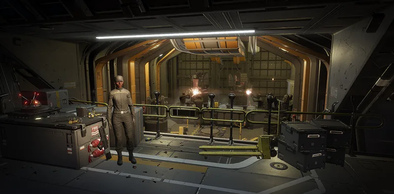

快速发射系统

“Jump-starts 绝地喷射舱 firing with an immediate TNT 引爆 at the time of launch.
— 舰船管理终端
快速发射系统 is a Tier 3 舰船模块 升级 for the 工程港.
升级效果
所有 阵地 战略配备 呼叫后立即发射，缩短总体部署时间。
- In practice this 升级 is a 3-second reduction to call-in times of affected 战略配备
要求
- 高级建造
 80 Common Sample
80 Common Sample 80 Rare Sample
80 Rare Sample 10 Super Sample
10 Super Sample
受影响的战略配备
变更历史
补丁
描述
1.000.000
2024-02-08
Released with the game.